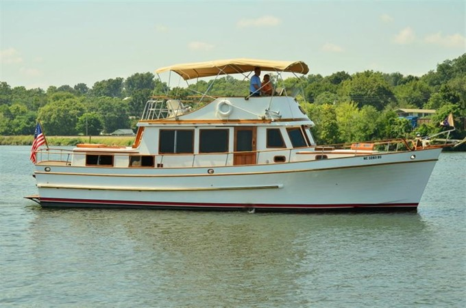

Marine Trader 44 Tri Cabin Tri-Cabin
1977–1988
The Marine Trader 44 Tri Cabin is a large Taiwan-built semi-displacement flybridge cruiser offered with two- or three-stateroom interiors and substantial fuel and water capacity. Its broad beam, teak interior and extensive deck space support liveaboard and extended coastal use. Twin diesels are typical, and the boat carries yacht-scale systems and maintenance demands.

- Length
- 43.5 ft
- Beam
- 14.33 ft
- Draft
- 4.17 ft
- Hull behaviour
- Semi-Displacement
- Fuel
- Diesel
- Propulsion
- Shaft
- Engine configuration
- Twin Inboard
- Boat family
- Trawler
- Construction
- Fiberglass
Best for
- Owners wanting a large traditional liveaboard cruiser
- Extended coastal and inland cruising where dimensions fit
- Buyers prepared for yacht-scale systems management
Trade-offs
- High purchase-independent refit, operating and haul-out costs
- Extensive teak, deck and window structure requires careful inspection
- Original wiring and other systems may require comprehensive modernization
- Large beam, displacement and air draft limit facilities and routes
Known concerns
- {'ConcernID': 'MRTR-44-ORIGINAL-WIRING', 'System': 'Electrical', 'Description': 'Published model guidance identifies original wiring quality as a recurring weakness on the Marine Trader 44 Tri Cabin.', 'AffectedYears': {'From': 1977, 'To': 1988}, 'AffectedVariations': [], 'BuyerQuestion': 'Has the AC and DC electrical system been professionally renewed and documented?', 'InspectionAction': 'Inspect wiring, panels, shore-power equipment, overcurrent protection and bonding for condition and compliance.', 'OwnerAction': 'Correct unsafe original or undocumented wiring and retain schematics and invoices.', 'EvidenceRefs': ['https://www.hmy.com/yachting/powerboat-guide/marine-trader/44-tri-cabin-1977-88'], 'Confidence': 'Moderate'}
Inspection focus
- Moisture-test teak-deck fasteners, deck penetrations, window surrounds and cabin-house joints
- Inspect fuel tanks, fill and vent hoses, supports and access for corrosion or leakage
- Inspect original wiring, shore-power equipment, bonding and later electrical modifications
- Inspect exhaust systems, engine mounts, shafting, rudders and steering gear
- Confirm builder, model configuration and major refit history from hull documentation
Continue researching
Related boat models
40 ft · Semi-Displacement
38 ft · Displacement
38 ft · Semi-Displacement
36 ft · Semi-Displacement
43.42 ft · Catamaran
43.33 ft · Semi-Displacement
About this record
B-Scout preserves uncertainty: missing information remains unknown rather than being treated as a negative. Specifications and guidance describe the model record; individual boats can differ by year, equipment, refit and condition.